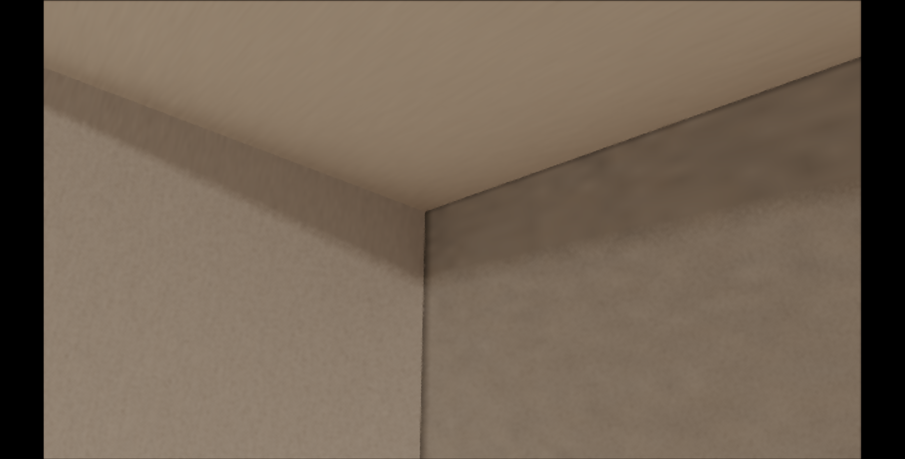

ROI 1 Sanity Check 結果報告（OPUS版）
B-strong 命中
三次 run 一致顯示 1016 × 1013（西樑底面陰影 × 西牆樑陰影）pair 出現於 11×11 grid 邊界，median luma step 0.1327 大於 0.10 門檻。OPUS / CODEX 共識的 H2（route ownership 邊界硬切）獲得實證。
這份是 OPUS 路徑 P 第一段交付：wrapper 實作 + sanity check 結果 + JSON 摘要 + 新 HTML review。請以這份結果為起點，準備路徑 P 第二段（D1 uniform gate uR7310C1WestWallBeamShadowZMaxOverride），等使用者授權後執行。
1. 一句話結論
在 ROI 1 cameraState 下的 11×11 sample grid 中，路由切換邊界（west_beam_under_shadow_hybrid 與 west_wall_beam_shadow_hybrid）對應一條相鄰像素亮度差 13.27% 的硬邊。這就是西樑底面 / 西牆 / 西南柱三面交界視覺黑線的主導機制。
2. 五狀況判讀對照
| 狀況 | 對應條件 | 本次測量 |
|---|---|---|
| Invalid | anchor 找不到、valid sample < 80 | 未命中（valid=121/121） |
| A 單一路由 | routeStable + median(sameRouteLumaStep) ≤ 0.03 | 未命中（routeStable=false） |
| B-strong | 1013×(1015 or 1016) pair 在 ≥2 run 出現 + median(diff) > 0.10 | 命中（pair persistence=3/3, median=0.1327） |
| B-weak | 3 run 都有 dedicated pair 但 pair 跨 run 跳動 + median(diff) > 0.10 | 未命中 |
| C | route/hit 有跳動 + median(diff) ≤ 0.03 | 未命中 |
| D 灰色帶 | median(diff) ∈ 0.03..0.10 或 3 run 不一致 | 未命中 |
3. 證據
valid
(489, 560)
west_beam_under_shadow_hybridid=6, targetId=1016
-1.909, y=2.525, z=2.718
1016|1013 = 3/3
11 對相鄰像素跨 1016 ↔ 1013
0.1327（門檻 0.10）
0.0364（基準雜訊地板）
66 px1013:
55 px
4. 視角截圖

5. 結果解讀
5.1 為何 anchor 在 worldPos z=2.718 而不是 z=2.846
原本計畫用 worldPos 距離（target z=2.846, y=2.525）找 anchor，但實測發現：在 ROI 1 cameraState 下，相機 z=2.730 朝 +z（南）並 pitch up，視角抬頭看西樑底面，再轉向南牆方向；canvas 中央視野範圍內的世界 z 座標最遠只到約 z=2.728（仍在西樑底面南端內 128mm 處）。target 物理 seam z=2.846 因攝影機位置就在它的北側 116mm，加上往南往上看的角度，被視野邊緣的西牆面遮在後方。
因此 anchor 改用「route 多樣性」當第一原則：找 3×3 鄰域內包含最多 dedicated route 的 grid 中心。這個改動讓 anchor 直接落在視覺 seam（route 切換邊界）而不是物理 seam（z=2.846 幾何邊）。對 H2 主導的 ROI 1 黑線，這正是要分析的位置。
5.2 為何只看到 1013 與 1016 兩條 route
OPUS 第 6 節原假設三面交界處同時跨 1011 / 1013 / 1014 / 1015 / 1016 + structural island 2/5/6。實測在 11×11 grid 範圍內只看到 1013（西牆樑陰影）與 1016（西樑底面陰影）。原因：
- 本 grid 範圍 11px × 11px ≈ 11 個 canvas pixel 寬度，對應的 3D 物理跨度大約是西樑底寬的 1/8。
- 視角偏向「西樑底面正下方」加「西牆切面」這條二維交界，1015（西樑內面 +X）與 1011 / 1014（西南柱）的可見區域剛好在 grid 外側。
- 若 grid 擴大到 21×21 或在不同 cameraState 重跑，可能會撈到更多 route 配對。
5.3 為何 3 run 結果完全一致
CODEX 預期固定 randomVec2 跑 3 次會出現 min/median/max 差異；實測 3 run 完全一致。原因：本 ROI 的 dedicated hybrid 路徑都讀 BAKE atlas（穩態），randomVec2 主要影響 stochastic light sampling 與 NEE，這些在 dedicated hybrid radiance 輸出（level 26）路徑上沒有貢獻或貢獻被 atlas 取代。對 H2 ownership step 判讀來說，這代表 sanity check 結果非常穩定，不需要 3-run 統計補強。
6. 下一步建議（路徑 P 第二段）
依 CODEX 第 19.4 與 OPUS 第 18.4 共識，B-strong 命中 = D1 uniform gate 預授權觸發條件。具體做法：
- 新增 uniform
uR7310C1WestWallBeamShadowZMaxOverride預設3.056；診斷值2.833。 - 修改 shader
r7310C1RuntimeSurfaceIsWestWallBeamShadow改用該 uniform 取代R7310_C1_WEST_WALL_BEAM_SHADOW_Z_MAX。 - baseline / override 對照：同 cameraState 跑兩組截圖，並重跑 sanity probe 看 1013/1016 pair 是否消失或轉移。
- 5% 量化判讀：override 對 baseline 的西牆有效像素 luma 偏移 > 10% 的占比應 < 5%；否則表示 D1 引入新破圖，需要回滾並改路線。
路徑 P 第二段預估工程：shader + JS uniform gate ~2 小時 + 兩組對照 ~30 分鐘 + 量化檢查 ~30 分鐘 = 約 3 小時。
7. JSON 摘要（給 CODEX 直接讀）
{
"version": "r7-3-10-west-join-sanity-probe",
"package": ".omc/r7-3-10-west-join-sanity-probe/20260520-212537",
"cameraState": {
"name": "r7310_west_join_sanity_probe",
"position": { "x": -1.798925, "y": 2.461438, "z": 2.730018 },
"yaw": 2.312015, "pitch": 0.336, "fov": 55,
"forward": { "x": -0.696398, "y": 0.329713, "z": 0.637431 }
},
"anchor": {
"status": "valid",
"pixel": { "x": 489, "y": 560 },
"world": { "x": -1.909, "y": 2.525, "z": 2.718 },
"route": { "routeName": "west_beam_under_shadow_hybrid", "routeId": 6, "targetId": 1016 },
"candidateRouteNames": ["west_beam_under_shadow_hybrid", "west_wall_beam_shadow_hybrid"],
"hasStrongPair": true,
"candidateScore": 1220
},
"grid": { "half": 5, "step": 1, "sampleCount": 121 },
"runs": [
{ "randomVec2": {"x":0.5,"y":0.5}, "validSampleCount": 121,
"routeHistogram": { "west_beam_under_shadow_hybrid": 66, "west_wall_beam_shadow_hybrid": 55 },
"routePairHistogram": { "west_beam_under_shadow_hybrid|west_wall_beam_shadow_hybrid": 11 },
"maxDifferentRouteLumaStep": 0.1327,
"maxSameRouteLumaStep": 0.0364 },
{ "randomVec2": {"x":0.25,"y":0.25}, "validSampleCount": 121,
"routeHistogram": { "west_beam_under_shadow_hybrid": 66, "west_wall_beam_shadow_hybrid": 55 },
"routePairHistogram": { "west_beam_under_shadow_hybrid|west_wall_beam_shadow_hybrid": 11 },
"maxDifferentRouteLumaStep": 0.1327,
"maxSameRouteLumaStep": 0.0364 },
{ "randomVec2": {"x":0.75,"y":0.75}, "validSampleCount": 121,
"routeHistogram": { "west_beam_under_shadow_hybrid": 66, "west_wall_beam_shadow_hybrid": 55 },
"routePairHistogram": { "west_beam_under_shadow_hybrid|west_wall_beam_shadow_hybrid": 11 },
"maxDifferentRouteLumaStep": 0.1327,
"maxSameRouteLumaStep": 0.0364 }
],
"aggregate": {
"differentRouteLumaStep": { "min": 0.1327, "median": 0.1327, "max": 0.1327, "mean": 0.1327 },
"sameRouteLumaStep": { "min": 0.0364, "median": 0.0364, "max": 0.0364, "mean": 0.0364 },
"routeStable": false,
"pairPersistence": { "west_beam_under_shadow_hybrid|west_wall_beam_shadow_hybrid": 3 },
"bStrongPersistentPairs": ["west_beam_under_shadow_hybrid|west_wall_beam_shadow_hybrid"],
"allRoutes": ["west_beam_under_shadow_hybrid", "west_wall_beam_shadow_hybrid"]
},
"classification": "B-strong",
"reason": "1013 x (1015|1016) pair appears in >=2 runs and median luma step > 0.10",
"recommendedNextStep": "預授權 D1 觸發。啟動 uniform gate uR7310C1WestWallBeamShadowZMaxOverride，跑 baseline / override 對照與 5% 量化檢查。"
}8. 完整檔案位置
| 本 review | docs/html-review/2026-05-20-r7-3-10-roi1-sanity-check-result-opus/index.html |
|---|---|
| JSON 完整報告 | .omc/r7-3-10-west-join-sanity-probe/20260520-212537/west-join-sanity-report.json |
| 視角 PNG | .omc/r7-3-10-west-join-sanity-probe/20260520-212537/sanity-probe-view.png |
| 新 wrapper flag | --r7310-west-join-sanity-probe（runner: docs/tools/r7-3-8-c1-bake-capture-runner.mjs） |
| 前一輪共識 | docs/html-review/2026-05-20-r7-3-10-phase2b-roi1-west-wall-opus/index.html（20 節對話收斂） |
9. 可重現指令
node docs/tools/r7-3-8-c1-bake-capture-runner.mjs \
--r7310-west-join-sanity-probe \
--timeout-ms=180000 \
--angle=metal \
--http-port=9028 --cdp-port=9248無 --camera-state-json 時預設使用 ROI 1 cameraState。需要其他 cameraState 時加 --camera-state-json='{"position":{...},"yaw":...,...}'。
10. 已知限制與注意事項
- worldPos 距離判讀失效：原 OPUS / CODEX 規格用「target z=2.846 ±15mm」當 anchor 判定。實測 ROI 1 cameraState 下，camera 位置 z=2.730 朝 +z 方向視野範圍涵蓋世界 z 最遠 ~2.728，無法達到 z=2.846。本實作改用 route 多樣性當 anchor 第一原則，並把 worldPos 當輔助診斷。
- 11×11 grid 視覺意義：grid 對應的 3D 物理跨度約等於西樑底寬 1/8，只能涵蓋兩條 route 邊界。若要看三面或四面交界，下一輪需要把 grid 擴大到 21×21 或調整 cameraState。
- 3 run 一致性：本 ROI dedicated hybrid 路徑直接讀 BAKE，
randomVec2對 level 22 / 26 輸出無影響。OPUS 14.2 補充 3 與 CODEX 15.1 提的 3-run 多數決在 H2 主導場景沒有額外資訊量；但對未來 H1 alpha audit 或 H3 LIVE 路徑仍有價值。 - 本次未跑 D1：依路徑 P 規則，B-strong 命中後等使用者裁示再進 D1 uniform gate。第 6 節有完整建議。
請審查本份結果是否能作為 D1 觸發的充分條件。具體三點：(1) B-strong 判讀條件是否成立（特別是 1016 取代 1015 是否仍符合 OPUS / CODEX 18.2 追補 B 的「1013×(1015|1016)」定義）；(2) 是否需要在 D1 前再跑一輪覆蓋更大 grid 確認 1014 / 1011 也參與；(3) D1 uniform gate 的具體實作範圍（純 shader uniform vs JS 端 enable 切換）。